Bangalore weather few-shot review
A public, browser-friendly copy of the few-shot review cards. Source files live in the repository.
Example 01 — Dry spell broken by a sharp burst
Apr 12, 2021 to Apr 25, 2021 | 14-day window
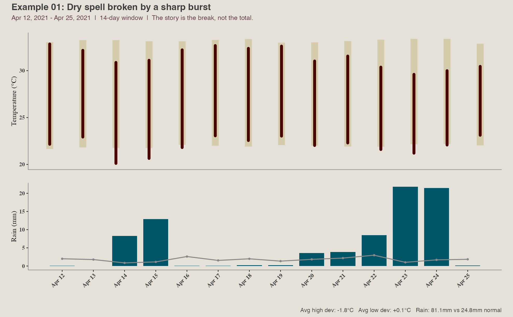
- Why this case matters: Totals alone are misleading; the key is the sudden break after dryness.
- Why this window length: The story is the break, not the total.
- Facts to read: Rain 81.1mm vs 24.8mm normal; avg high dev -1.8°C; avg low dev +0.1°C; rainy days 10; wettest 3-day stretch 51.7mm; antecedent dry streak 51 days; record days 0
Fill these in inside feedback_sheet.csv:
- your_headline
- what_claude_should_learn
- extra_notes (optional)
Example 02 — Sustained wet stretch
Oct 01, 2005 to Oct 30, 2005 | 30-day window
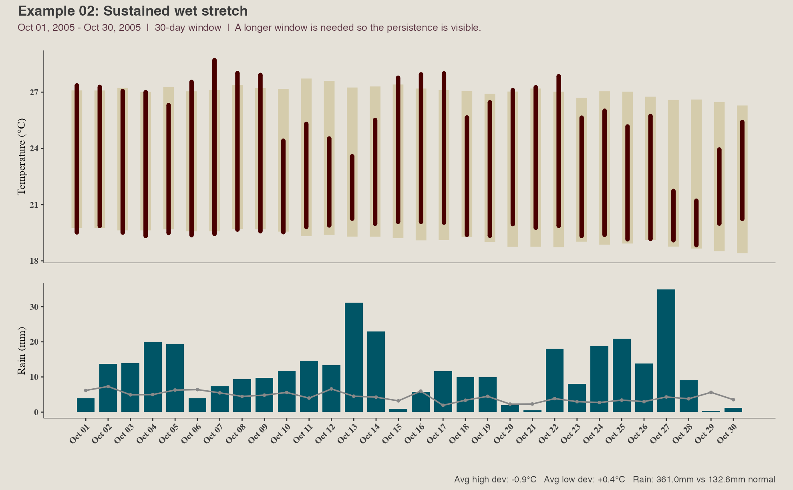
- Why this case matters: This teaches the model to recognise persistence rather than a single heavy day.
- Why this window length: A longer window is needed so the persistence is visible.
- Facts to read: Rain 361.0mm vs 132.6mm normal; avg high dev -0.9°C; avg low dev +0.4°C; rainy days 30; wettest 3-day stretch 69.7mm; antecedent dry streak 0 days; record days 0
Fill these in inside feedback_sheet.csv:
- your_headline
- what_claude_should_learn
- extra_notes (optional)
Example 03 — Rain concentrated into one short spell
May 14, 2013 to May 20, 2013 | 7-day window
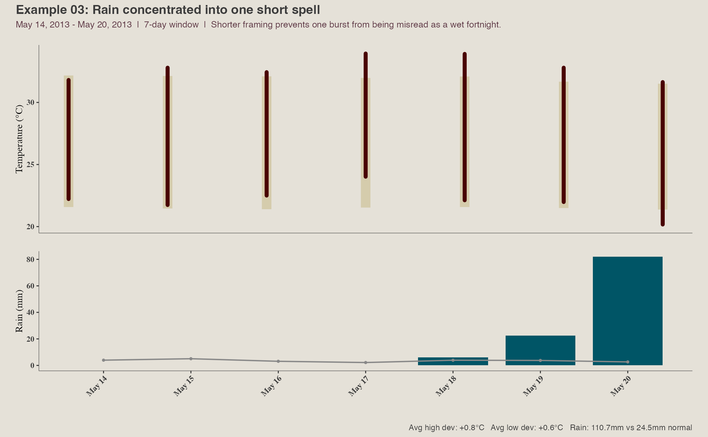
- Why this case matters: This teaches the model not to call a window broadly wet when the rain is concentrated.
- Why this window length: Shorter framing prevents one burst from being misread as a wet fortnight.
- Facts to read: Rain 110.7mm vs 24.5mm normal; avg high dev +0.8°C; avg low dev +0.6°C; rainy days 3; wettest 3-day stretch 110.6mm; antecedent dry streak 5 days; record days 0
Fill these in inside feedback_sheet.csv:
- your_headline
- what_claude_should_learn
- extra_notes (optional)
Example 04 — Persistently dry window
Oct 12, 2015 to Oct 25, 2015 | 14-day window
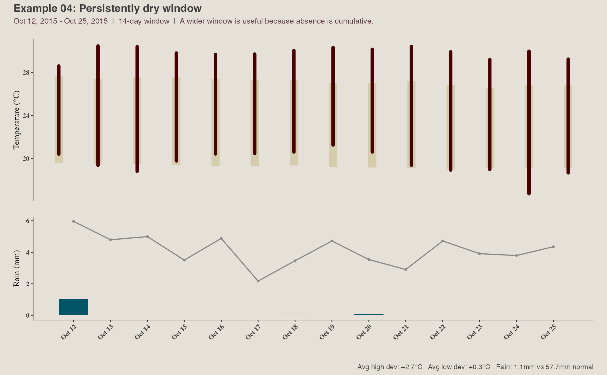
- Why this case matters: This teaches the model to treat absence of rain as a real signal.
- Why this window length: A wider window is useful because absence is cumulative.
- Facts to read: Rain 1.1mm vs 57.7mm normal; avg high dev +2.7°C; avg low dev +0.3°C; rainy days 1; wettest 3-day stretch 1.0mm; antecedent dry streak 0 days; record days 9
Fill these in inside feedback_sheet.csv:
- your_headline
- what_claude_should_learn
- extra_notes (optional)
Example 05 — Daytime heat spell
Apr 24, 2024 to May 07, 2024 | 14-day window
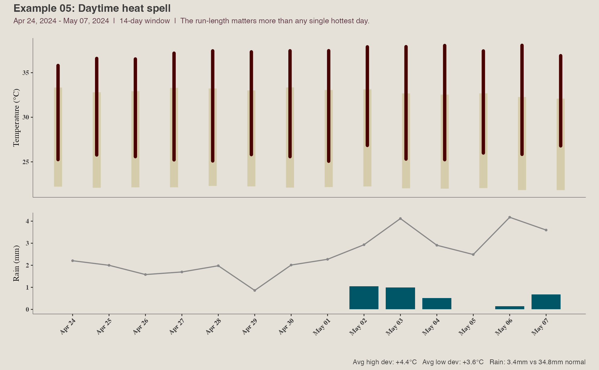
- Why this case matters: This teaches the model to prioritise a clear daytime heat run.
- Why this window length: The run-length matters more than any single hottest day.
- Facts to read: Rain 3.4mm vs 34.8mm normal; avg high dev +4.4°C; avg low dev +3.6°C; rainy days 5; wettest 3-day stretch 2.5mm; antecedent dry streak 12 days; record days 11
Fill these in inside feedback_sheet.csv:
- your_headline
- what_claude_should_learn
- extra_notes (optional)
Example 06 — Warm-night run
Dec 07, 2014 to Dec 20, 2014 | 14-day window
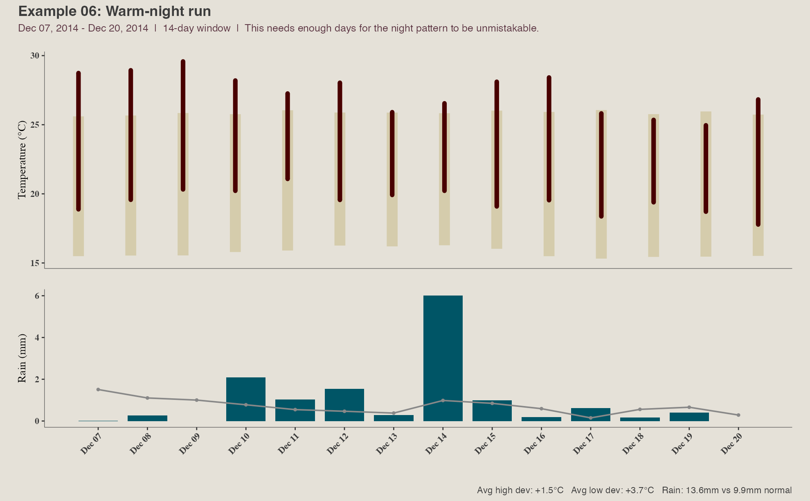
- Why this case matters: This teaches the model not to miss elevated night temperatures when highs are less dramatic.
- Why this window length: This needs enough days for the night pattern to be unmistakable.
- Facts to read: Rain 13.6mm vs 9.9mm normal; avg high dev +1.5°C; avg low dev +3.7°C; rainy days 11; wettest 3-day stretch 7.8mm; antecedent dry streak 8 days; record days 3
Fill these in inside feedback_sheet.csv:
- your_headline
- what_claude_should_learn
- extra_notes (optional)
Example 07 — Cool daytime spell
Mar 20, 2008 to Apr 02, 2008 | 14-day window
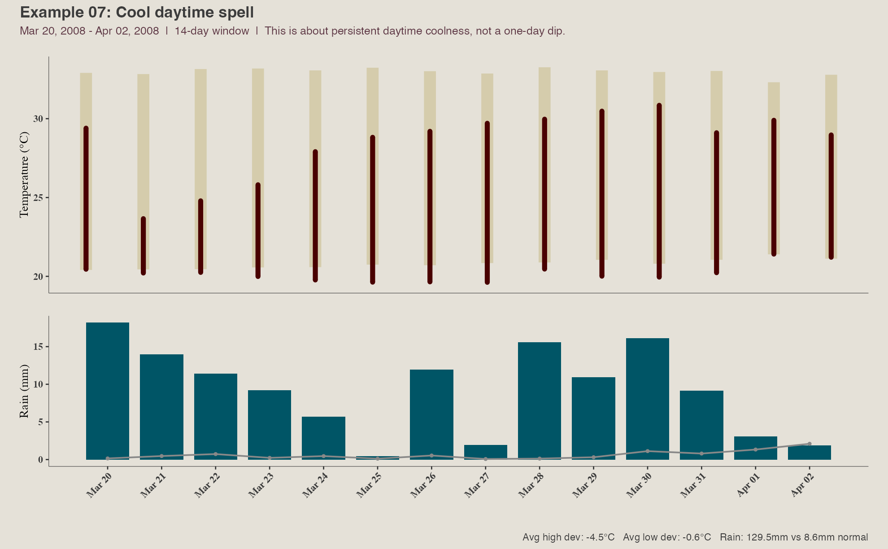
- Why this case matters: This teaches the model to spot sustained cool highs relative to normal.
- Why this window length: This is about persistent daytime coolness, not a one-day dip.
- Facts to read: Rain 129.5mm vs 8.6mm normal; avg high dev -4.5°C; avg low dev -0.6°C; rainy days 14; wettest 3-day stretch 43.5mm; antecedent dry streak 3 days; record days 0
Fill these in inside feedback_sheet.csv:
- your_headline
- what_claude_should_learn
- extra_notes (optional)
Example 08 — Cool-night run
Oct 26, 2008 to Nov 08, 2008 | 14-day window
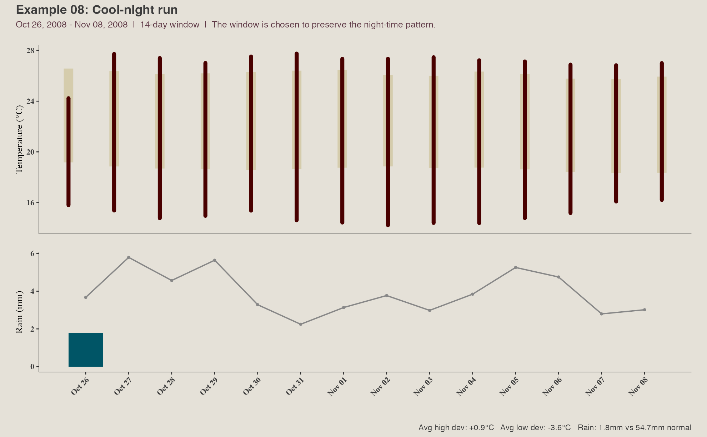
- Why this case matters: This teaches the model to separate cool nights from cool days.
- Why this window length: The window is chosen to preserve the night-time pattern.
- Facts to read: Rain 1.8mm vs 54.7mm normal; avg high dev +0.9°C; avg low dev -3.6°C; rainy days 1; wettest 3-day stretch 1.8mm; antecedent dry streak 0 days; record days 9
Fill these in inside feedback_sheet.csv:
- your_headline
- what_claude_should_learn
- extra_notes (optional)
Example 09 — Record-heavy patch
Nov 15, 2016 to Nov 28, 2016 | 14-day window
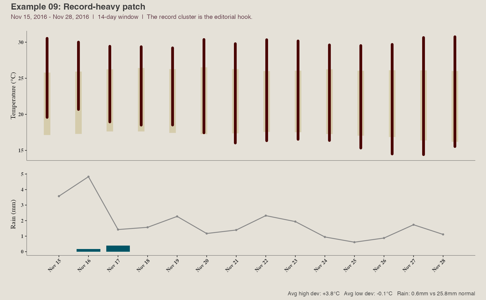
- Why this case matters: This teaches the model to foreground records when they cluster.
- Why this window length: The record cluster is the editorial hook.
- Facts to read: Rain 0.6mm vs 25.8mm normal; avg high dev +3.8°C; avg low dev -0.1°C; rainy days 2; wettest 3-day stretch 0.6mm; antecedent dry streak 2 days; record days 14
Fill these in inside feedback_sheet.csv:
- your_headline
- what_claude_should_learn
- extra_notes (optional)
Example 10 — Wet month building through accumulation
Nov 03, 2015 to Dec 02, 2015 | 30-day window
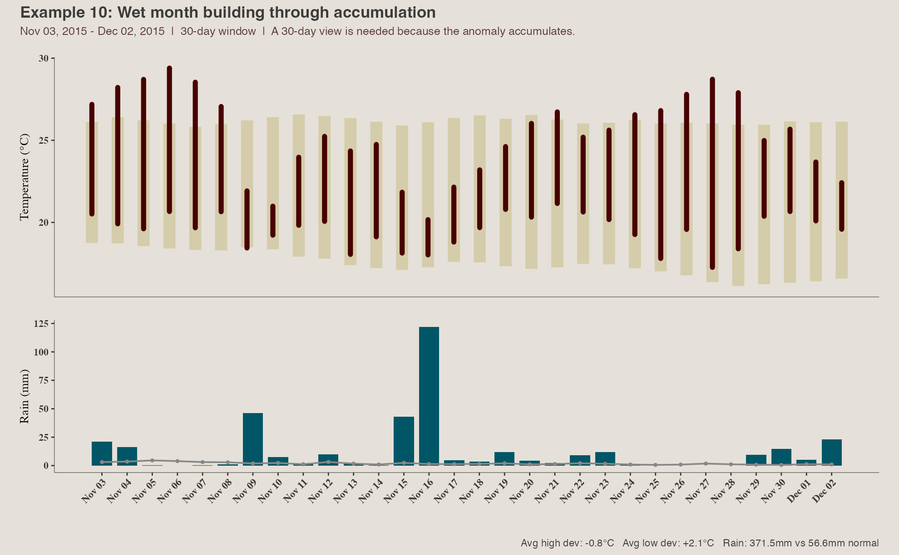
- Why this case matters: This teaches the model that some stories are cumulative and need a month-long frame.
- Why this window length: A 30-day view is needed because the anomaly accumulates.
- Facts to read: Rain 371.5mm vs 56.6mm normal; avg high dev -0.8°C; avg low dev +2.1°C; rainy days 25; wettest 3-day stretch 169.8mm; antecedent dry streak 0 days; record days 1
Fill these in inside feedback_sheet.csv:
- your_headline
- what_claude_should_learn
- extra_notes (optional)
Example 11 — Dry month building through accumulation
Sep 29, 2016 to Oct 28, 2016 | 30-day window
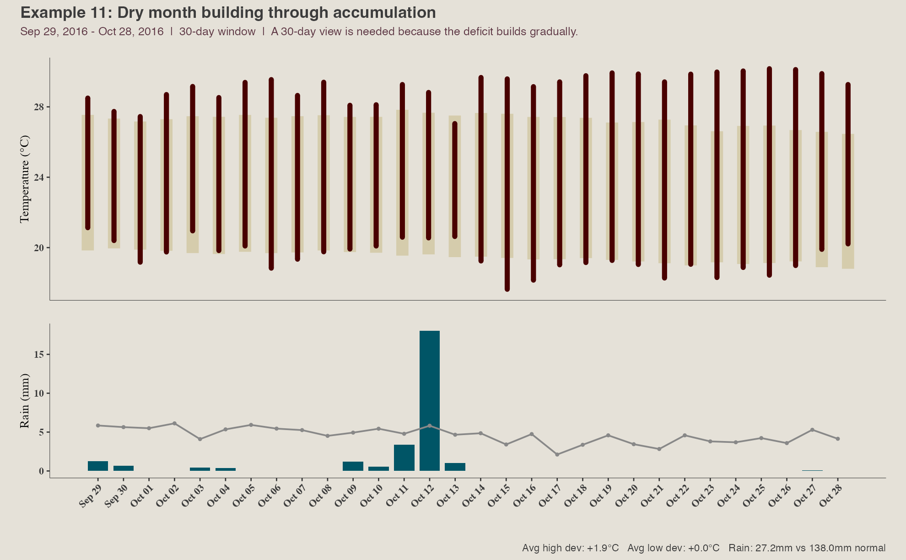
- Why this case matters: This teaches the model that rainfall deficits often need a month-long frame.
- Why this window length: A 30-day view is needed because the deficit builds gradually.
- Facts to read: Rain 27.2mm vs 138.0mm normal; avg high dev +1.9°C; avg low dev +0.0°C; rainy days 9; wettest 3-day stretch 22.5mm; antecedent dry streak 0 days; record days 6
Fill these in inside feedback_sheet.csv:
- your_headline
- what_claude_should_learn
- extra_notes (optional)
Example 12 — Heat-to-rain whiplash
Feb 28, 2009 to Mar 13, 2009 | 14-day window
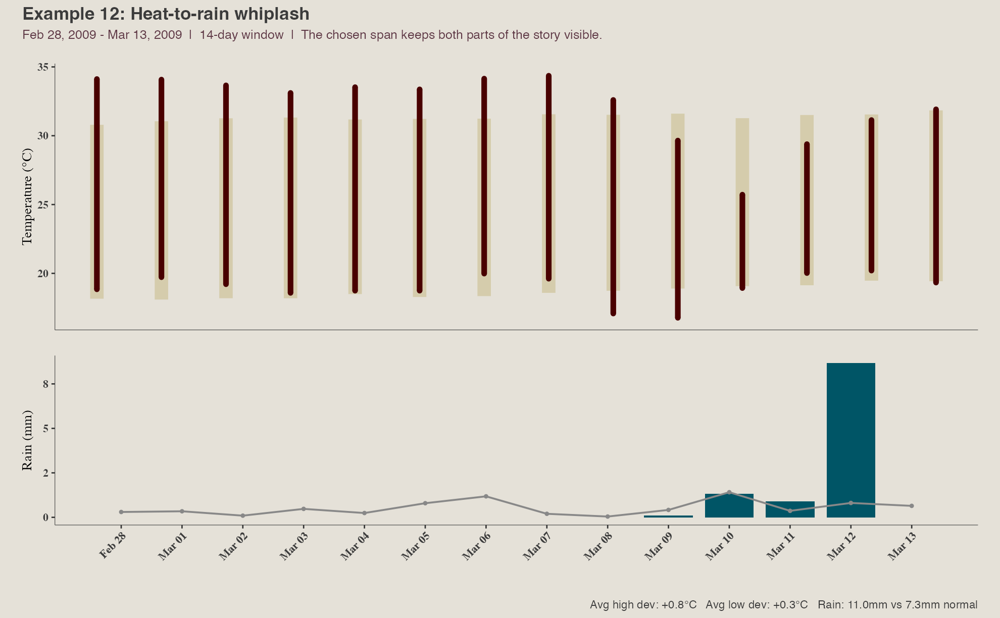
- Why this case matters: This teaches the model to keep two linked signals in view instead of flattening them.
- Why this window length: The chosen span keeps both parts of the story visible.
- Facts to read: Rain 11.0mm vs 7.3mm normal; avg high dev +0.8°C; avg low dev +0.3°C; rainy days 4; wettest 3-day stretch 10.9mm; antecedent dry streak 60 days; record days 5
Fill these in inside feedback_sheet.csv:
- your_headline
- what_claude_should_learn
- extra_notes (optional)